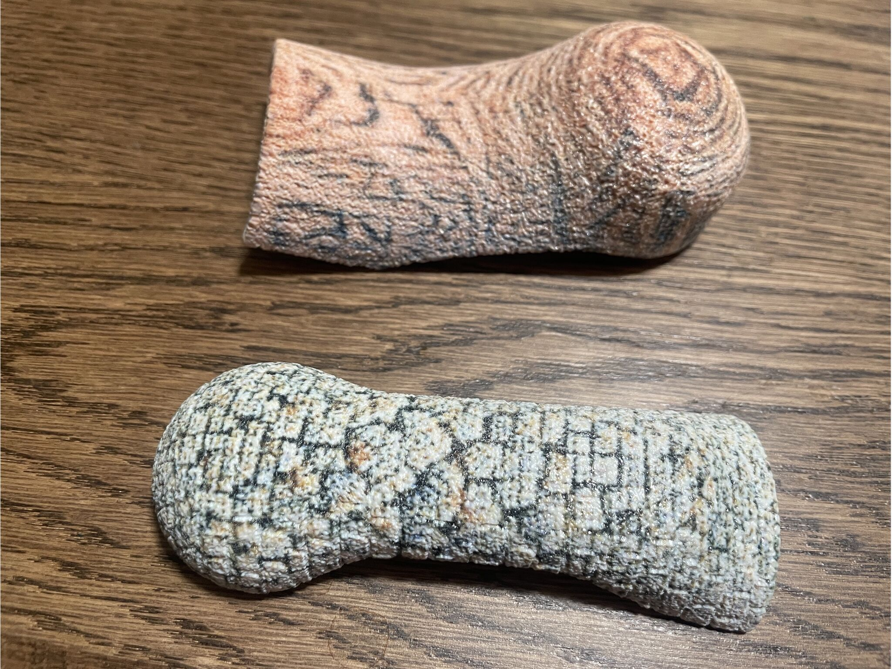
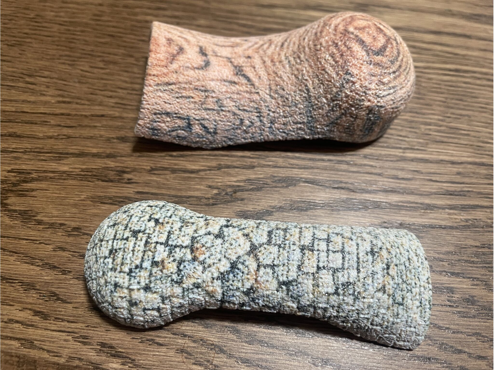
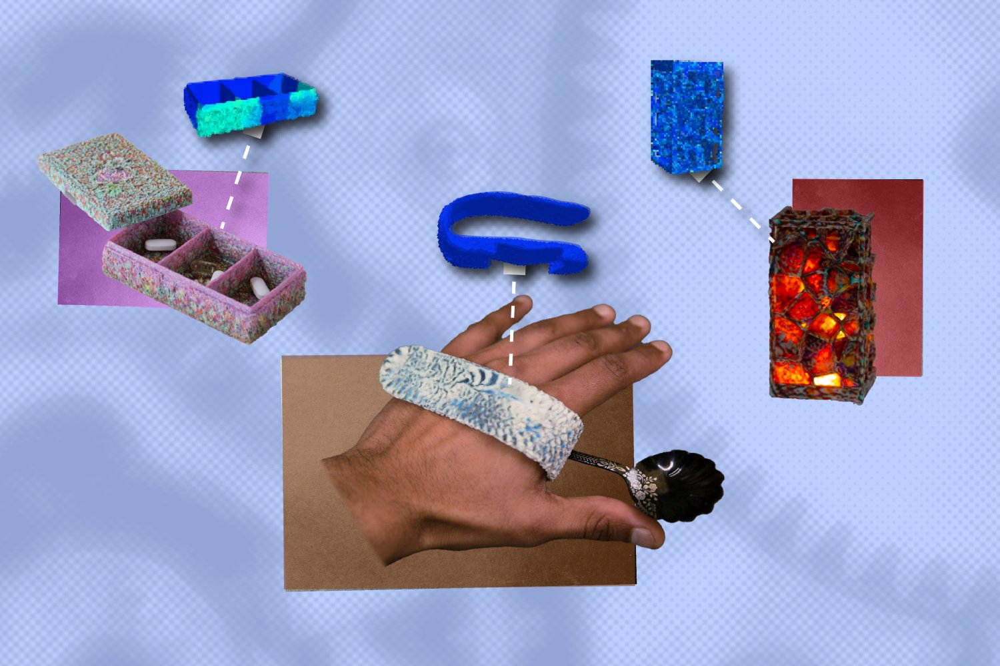

Generative AI tool helps 3D print personal items that sustain daily use

MechStyle, a system developed at MIT, enables users to upload a 3D model or preset asset of everyday items, then prompt a generative AI model using images or text to personalize it. The system keeps the design structurally sound before it's 3D printed.